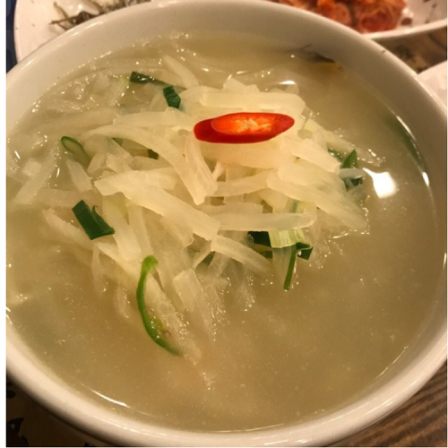
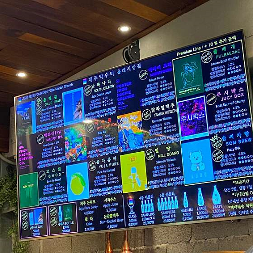

먹을거리
예상 금액(1인)
Total
￦0
-

맛집: 돼지고기
웨이팅: 기본 30분
주소: 제주시 원노형로 41 1층
맛집별점(5점): 4.0 -

우진해장국
￦10000원 상세정보맛집: 해장국
웨이팅: 기본 1시간
주소: 제주 제주시 서사로 11
맛집별점(5점): 4.5 -

시골길
￦20000원(소) 상세정보맛집: 낙지볶음
웨이팅: 기본 30분
주소: 제주 제주시 연동13길 9
맛집별점(5점): 4.0 -

만부정
￦24000원 상세정보맛집: 복어요리
웨이팅: 기본 30분
주소: 제주 제주시 사장길 38 만부정 9
맛집별점(5점): 4.0 -
그랜드키친
￦130000원 상세정보맛집: 뷔페
웨이팅: 예약
주소: 제주 제주시 노연로 12 제주 드림타워 4층
맛집별점(5점): 3.9 -

자구내
￦17000원 상세정보맛집: 향토음식
웨이팅: 기본 10분
주소: 제주 제주시 삼무로3길 18
맛집별점(5점): 3.8 -

숯불덮밥 화리
￦12000원 상세정보맛집: 덮밥
웨이팅: 기본 20분
주소: 제주 제주시 애월읍 유수암평화5길 30
맛집별점(5점): 4.8 -

월령작야 달의객잔
￦28000원 상세정보맛집: 이자까야
웨이팅: 기본 30분
주소: 제주 제주시 한림읍 월령3길 39-5 1층
맛집별점(5점): 4.5 -

애파소
￦9000원 상세정보맛집: 커리
웨이팅: 기본 15분
주소: 제주 제주시 애월읍 애월로 118 2층
맛집별점(5점): 4.3 -
요리하는 키작은삼촌
￦15000원 상세정보맛집: 한식
웨이팅: 기본 20분
주소: 제주 서귀포시 성산읍 일주동로 4304 1층
맛집별점(5점): 4.5 -

광어다
￦22000원 상세정보맛집: 한식
웨이팅: 기본 10분
주소: 제주 서귀포시 표선면 민속해안로 73 광해수산2층
맛집별점(5점): 4.6 -

아루요
￦9000원 상세정보맛집: 일식
웨이팅: 기본 20분
주소: 제주 제주시 애월읍 유수암평화5길 15-8 아루요
맛집별점(5점): 4.5 -

금악정육식당
￦변동원 상세정보맛집: 돼지고기
웨이팅: 기본 5분
주소: 제주 제주시 한림읍 중산간서로 4302
맛집별점(5점): 4.2 -

제주약수터
￦6000원 상세정보맛집: 맥주집
웨이팅: 기본 30분
주소: 제주 서귀포시 중앙로 35 1층
맛집별점(5점): 4.5 -

맨도릉돈까스
￦12000원 상세정보맛집: 돈까스
웨이팅: 기본 30분
주소: 제주 제주시 구좌읍 월정7길 58
맛집별점(5점): 4.5 -

치저스
￦15000원 상세정보맛집: 양식
웨이팅: 기본 30분
주소: 제주 제주시 구좌읍 비자림로 1785
맛집별점(5점): 4.4 -

호커센터
￦20000원 상세정보맛집: 싱가폴음식
웨이팅: 기본 120분
주소: 제주 제주시 애월읍 애월로11길 25-2 호커센터
맛집별점(5점): 4.6 -

신제주보말칼국수
￦9000원 상세정보맛집: 칼국수
웨이팅: 기본 20분
주소: 제주 제주시 선덕로5길 19
맛집별점(5점): 4.5